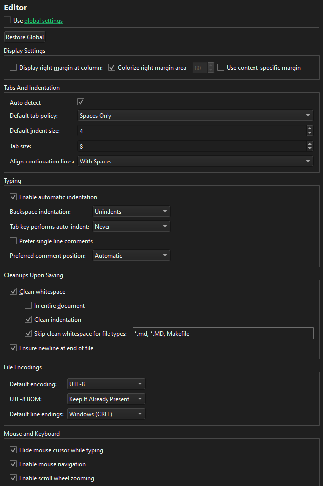

Specify editor settings
Qt Creator uses the MIME type of the file to determine which mode and editor to use for opening the file. For example, Qt Creator opens .txt files in Edit mode in the text editor.
To configure the text editor behavior for the current project:
- Select Projects > Project Settings > Editor.
- Clear Use global settings.
- Specify text editor settings for the project.

Select Restore Global to revert to the global settings.
See also Configuring Fonts, Change text encoding, Indent text or code, View function tooltips, and Text Editor.